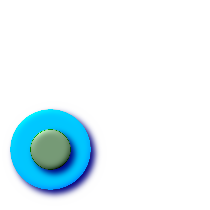

Name
ST_Within — Returns true if the geometry A is completely inside geometry B
Synopsis
boolean ST_Within(geometry
A, geometry
B);
Description
Returns TRUE if geometry A is completely inside geometry B. For this function to make sense, the source geometries must both be of the same coordinate projection, having the same SRID. It is a given that if ST_Within(A,B) is true and ST_Within(B,A) is true, then the two geometries are considered spatially equal.
Performed by the GEOS module
![[Important]](images/important.png) | |
Do not call with a |
| |
Do not use this function with invalid geometries. You will get unexpected results. |
This function call will automatically include a bounding box comparison that will make use of any indexes that are available on the geometries. To avoid index use, use the function _ST_Within.
NOTE: this is the "allowable" version that returns a boolean, not an integer.
 This method implements the OpenGIS Simple Features
Implementation Specification for SQL 1.1. s2.1.1.2 // s2.1.13.3
- a.Relate(b, 'T*F**F***')
This method implements the OpenGIS Simple Features
Implementation Specification for SQL 1.1. s2.1.1.2 // s2.1.13.3
- a.Relate(b, 'T*F**F***')
This method implements the SQL/MM specification. SQL-MM 3: 5.1.30
Examples
--a circle within a circle
SELECT ST_Within(smallc,smallc) As smallinsmall,
ST_Within(smallc, bigc) As smallinbig,
ST_Within(bigc,smallc) As biginsmall,
ST_Within(ST_Union(smallc, bigc), bigc) as unioninbig,
ST_Within(bigc, ST_Union(smallc, bigc)) as biginunion,
ST_Equals(bigc, ST_Union(smallc, bigc)) as bigisunion
FROM
(
SELECT ST_Buffer(ST_GeomFromText('POINT(50 50)'), 20) As smallc,
ST_Buffer(ST_GeomFromText('POINT(50 50)'), 40) As bigc) As foo;
--Result
smallinsmall | smallinbig | biginsmall | unioninbig | biginunion | bigisunion
--------------+------------+------------+------------+------------+------------
t | t | f | t | t | t
(1 row)
